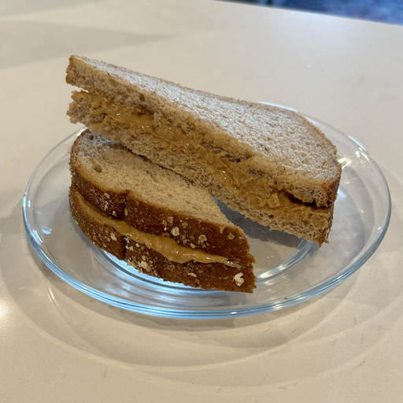

Home
Peanut Butter & Honey

Starting with a simple classic
Ingredients
- Your favorite peanut butter
- Your favorite honey
- Your bread of choice
Steps
- Take out the amount of slices you want. Obviously a traditional sandwich is 2 slices, but if you're running low on bread you can take a single slice and fold it in half at the end
- Next we add the peanut butter to one side of each slice or the single slice. As a PB lover, I make sure to cover every inch I can.
- It's honey time. I prefer a figure 8 pattern on each slice aiming for the middle. You want to be careful putting honey towards the corners where it can leak out
- Finally it's time to close our sandwich. If you're using 2 slices, place one on top of the other so the peanut butter sides are facing each other. If you are only using one slice, simply fold it in half.